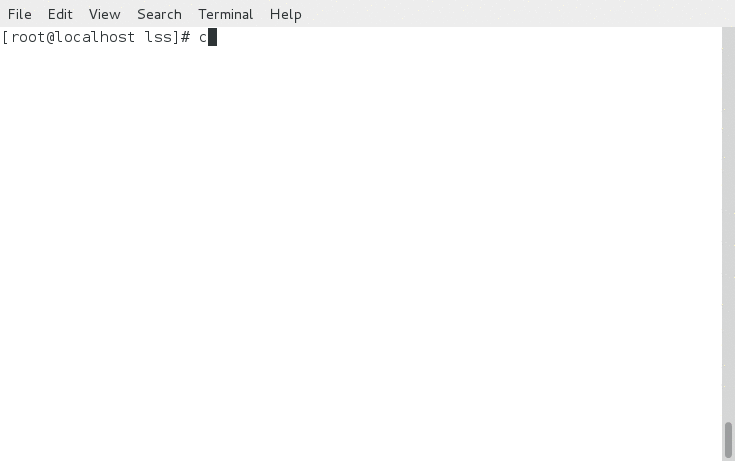
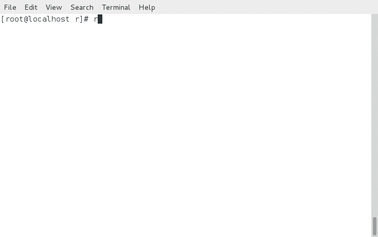

How to do work interactively
Table of Contents
1 Problem
- Press Tab again and agin when cd to some very deep directories or vim some files in a deep directories.
- Input a very long file name again and again to try different commands: unzip, tar , file, vim…
2 Installation
2.1 Install percol
Download the package and extract it. Copy the sub-directory "percol/" to "~/bin". Rename "percol" in sub-directory "bin" to "percol.py" and copy it to "~/bin".
unzip percol-master.zip cd percol-master mkdir ~/bin cp percol ~/bin -a cp bin/percol ~/bin/percol.py
Verify installation:
ps ax | percol.py
2.2 Intall this script
Copy this script (rc.sh) to "~/" and source it from "~/.bashrc".
cp rc.sh ~/ echo . ~/rc.sh >> ~/.bashrc
3 Usage
3.1 cdd
Cd to a very deep directory.
3.2 ff
Find a file by locate, and perform some actions to it.
3.3 lss
Find a file by find in current directory and sub directoris, and perform some actions to it.

3.4 pss
Find a process by ps and kill it.
3.5 r
Run a command in my favorite command list.

3.6 h
Run a command in history.
4 Acknowledge
This script is inspired by How to do the file navigation efficiently